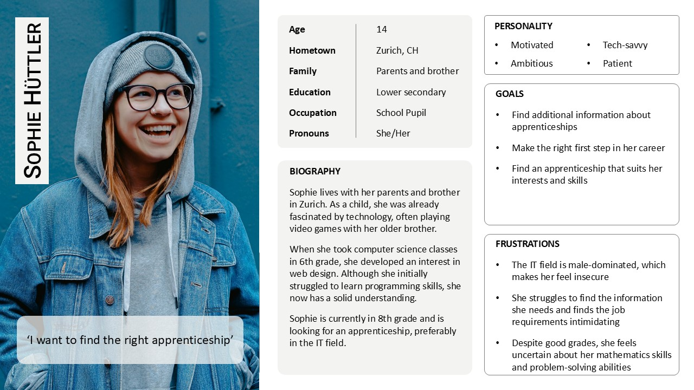

BYTEMENTOR


The Problem
Gender-specific careers remain inaccessible to many, limiting opportunities for young people.
This project aligns with UN Goal 4.3 to ensure equal access to career opportunities.
The Goal
Develop an app concept designed to make career exploration in IT easier and more engaging.
My Role
I was responsible for the entire product design process - from research to testing - within a team of three people.
To ensure ByteMentor meets the needs of its users, we identified potential problem areas through empathy interviews. We spoke with four young women (ages 16 to 24), some already in IT apprenticeships, some still uncertain about their career paths. We had the following goals:
Lack of Clarity
Job descriptions often don't match real tasks
Uncertainty
Doubts about whether their skills are good enough
Scattered Information
Information is spread across multiple sources
Limited Connections
Few opportunities to connect with companies
Lack of Clarity
Job descriptions often don't match real tasks
Uncertainty
Doubts about whether their skills are good enough
Scattered Information
Information is spread across multiple sources
Limited Connections
Few opportunities to connect with companies
Using our gathered insights, we developed Sophie, a representative persona reflecting the challenges of young people aspiring for careers in IT. By defining her needs, we prioritized key features for ByteMentor, ensuring that it directly addresses the pain points.
To focus our design efforts, we created a problem scenario from Sophie’s perspective, highlighting the challenges and uncertainties she faces.

This method works as follows:

A well-structured information architecture was key to ensuring effortless navigation, reducing frustration, and enhancing engagement. Our focus areas were:

We mapped out user flows to visualize how potential users would navigate ByteMentor, ensuring the most efficient and intuitive paths to their goals. This helped us define the necessary pages and interactions for the prototype.


We created a structured usability test guide with questions and space for notes. We conducted the tests in-person using a Figma prototype on a mobile device. We tested the prototype with six potential users, two of whom had participated in our initial interviews:
Improve back button
Back button should return to the previous screen
Simplify navigation
The corausel should show images of the same profession
Favourite functionality
Add an explanation to how Favourites work
Hide irrelevant results
Introduce the option to hide irrelevant results
Improve back button
Back button should return to the previous screen
Simplify navigation
The corausel should show images of the same profession
Favourite functionality
Add an explanation to how Favourites work
Hide irrelevant results
Introduce the option to hide irrelevant results